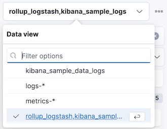
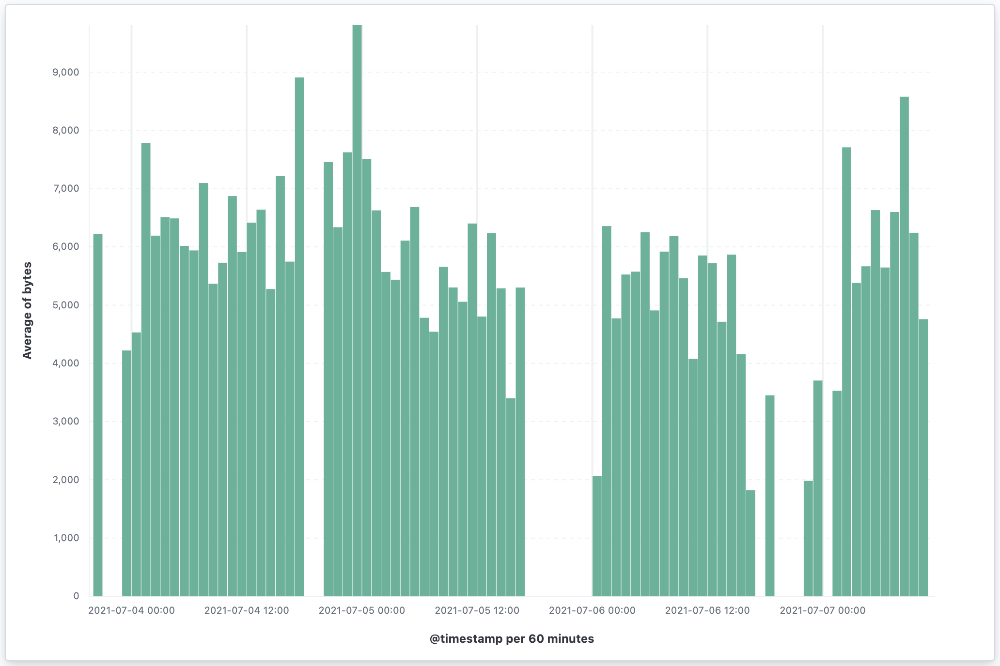

Rollup Jobs
editDeprecated in 8.11.0.
Rollups are deprecated and will be removed in a future version. Use downsampling instead.
A rollup job is a periodic task that aggregates data from indices specified by an index pattern, and then rolls it into a new index. Rollup indices are a good way to compactly store months or years of historical data for use in visualizations and reports.
To get started, open the main menu, then click Stack Management > Rollup Jobs.
Before using this feature, you should be familiar with how rollups work. Rolling up historical data is a good source for more detailed information.
Required permissions
editThe manage_rollup cluster privilege is required to access Rollup jobs.
To add the privilege, open the main menu, then click Stack Management > Roles.
Create a rollup job
editKibana makes it easy for you to create a rollup job by walking you through the process. You fill in the name, data flow, and how often you want to roll up the data. Then you define a date histogram aggregation for the rollup job and optionally define terms, histogram, and metrics aggregations.
When defining the index pattern, you must enter a name that is different than
the output rollup index. Otherwise, the job will attempt to capture the data in
the rollup index. For example, if your index pattern is metricbeat-*, you can
name your rollup index rollup-metricbeat, but not metricbeat-rollup.
Start, stop, and delete rollup jobs
editOnce you’ve saved a rollup job, you’ll see it the Rollup Jobs overview page, where you can drill down for further investigation. The Manage menu enables you to start, stop, and delete the rollup job. You must first stop a rollup job before deleting it.
You can’t change a rollup job after you’ve created it. To select additional fields or redefine terms, you must delete the existing job, and then create a new one with the updated specifications. Be sure to use a different name for the new rollup job—reusing the same name can lead to problems with mismatched job configurations. Refer to rollup job configuration.
Try it: Create and visualize rolled up data
editThis example creates a rollup job to capture log data from sample web logs. Before you start, add the web logs sample data set.
In this example, you want data that is older than 7 days in the
kibana_sample_data_logs index to roll up into the rollup_logstash index.
You’ll bucket the rolled up data on an hourly basis, using 60m for the time
bucket configuration.
For this example, the job will perform the rollup every minute. However, you’d typically roll up less frequently in production.
Create the rollup job
editAs you walk through the Create rollup job UI, enter the data:
| Field | Value |
|---|---|
Name |
|
Index pattern |
|
Rollup index name |
|
Frequency |
Every minute |
Page size |
1000 |
Latency buffer |
7d |
Date field |
@timestamp |
Time bucket size |
60m |
Time zone |
UTC |
Terms |
geo.src, machine.os.keyword |
Histogram |
bytes, memory |
Histogram interval |
1000 |
Metrics |
bytes (average) |
On the Review and save page, click Start job now and Save.
The terms, histogram, and metrics fields reflect the key information to retain in the rolled up data: where visitors are from (geo.src), what operating system they are using (machine.os.keyword), and how much data is being sent (bytes).
You can now use the rolled up data for analysis at a fraction of the storage cost of the original index. The original data can live side by side with the new rollup index, or you can remove or archive it using index lifecycle management (ILM).
Visualize the rolled up data
editYour next step is to visualize your rolled up data in a vertical bar chart. Most visualizations support rolled up data, with the exception of Timelion and Vega visualizations.
- Open the main menu, then click Stack Management > Data Views.
- Click Create data view, and select Rollup data view from the dropdown.
-
Enter rollup_logstash,kibana_sample_logs as your Data View and
@timestampas the Time Filter field name.The notation for a combination data view with both raw and rolled up data is
rollup_logstash,kibana_sample_data_logs. In this data view,rollup_logstashmatches the rollup index andkibana_sample_data_logsmatches the raw data. - Open the main menu, click Dashboard, then Create dashboard.
- Set the time filter to Last 90 days.
- On the dashboard, click Create visualization.
-
Choose
rollup_logstash,kibana_sample_data_logsas your source to see both the raw and rolled up data. - Select Bar vertical stacked in the chart type dropdown.
-
Add the
@timestampfield to the Horizontal axis. -
Add the
bytesfield to the Vertical axis, defaulting to anAverage of bytes.Kibana creates a vertical bar chart of your data. Select a section of the chart to zoom in.
